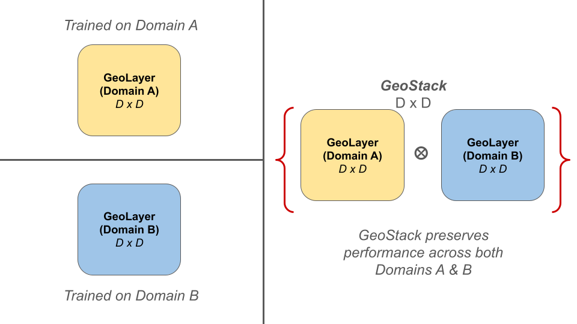

GeoStack enables independent domain experts (GeoLayers) to be composed into a unified model without catastrophic forgetting.
Abstract
We address the challenge of knowledge composition in Vision-Language Models (VLMs), where accumulating expertise across multiple domains leads to catastrophic forgetting. We introduce GeoStack (Geometric Stacking), a modular framework that allows independently trained domain experts to be composed into a unified model...
Full Abstract
We address the challenge of knowledge composition in Vision-Language Models (VLMs), where accumulating expertise across multiple domains or tasks typically leads to catastrophic forgetting. We introduce GeoStack (Geometric Stacking), a modular framework that allows independently trained domain experts to be composed into a unified model. By imposing geometric and structural constraints on the adapter manifold, GeoStack ensures the foundational knowledge of the base model is preserved. Furthermore, we mathematically demonstrate a weight-folding property that achieves constant-time inference complexity (O(1)), regardless of the number of integrated experts. Experimental results across multi-domain adaptation and class-incremental learning show that GeoStack provides an efficient mechanism for long-term knowledge composition while significantly mitigating catastrophic forgetting.
Methodology: GeoStack
Context: Zero-Shot CLIP
In vanilla Zero-Shot CLIP, classification is performed via the dot product between image features ($I$) and text features ($T$). BiCLIP builds on the hypothesis that domain-specific boundaries can be recovered by applying a geometric transformation matrix $W$, optimizing the product $IWT^\top$.
Step 1: Training the GeoLayer
GeoLayer are BiCLIP adapters trained with two structural constraints to allow for stackability.
- Upper Triangular Closure: Adapters are restricted to upper-triangular matrices. Since these are closed under multiplication, any composed operator $W_{total} = W_a W_b \dots W_n$ remains a valid member of the same transformation class.
- Perturbation Prior: Adapters are initialized as an identity matrix $I$, treating the learned transformation as a minimal domain-specific shift: $W = I + \Delta$.
COA Loss: Layers are optimized using the Convex Orthogonality Alignment (COA) loss, balancing domain alignment ($\mathcal{L}_{align}$) with a stackability objective ($\mathcal{L}_{ortho}$) that minimizes deviation from orthogonality.
Step 2: Creating the GeoStack
Once trained, independent GeoLayers are composed via sequential matrix multiplication to create a multi-expert model.
Properties of GeoStack
1. Quasi-Abelian Nature (Order Independence)
The order in which you the GeoLayers are stack does not significantly impact the final model's performance, allowing for flexible and modular knowledge integration.
2. Weight-Folding (Constant-Time Inference)
Multiple specialized experts can be mathematically collapsed into a single effective weight matrix, ensuring that the model maintains its original high-speed inference regardless of how many new domains are added.
3. Stackability Metric
GeoStack introduces a formal way to measure how well different experts can be combined without interference, providing a diagnostic tool to ensure that new specialized knowledge doesn't erode the model's foundational capabilities.
GeoStack Performance
To showcase the real-world utility of GeoStack, we evaluate its performance on two distinct computer vision problems that traditionally struggle with knowledge integration: Multi-Domain Adaptation (MDA) and Class-Incremental Learning (CIL).
1. Multi-Domain Adaptation (MDA)
Expand Results
To evaluate the stability of GeoStack, we define three stacks of increasing domain complexity, representing the transition from general foundational knowledge to highly specialized visual content:
- Easy Stack: ($i \to c \to fo \to e$) Coarse-to-fine semantic transition.
- Moderate Stack: ($i \to fo \to e \to d$) Progression toward increasing geometric complexity.
- Hard Stack: ($i \to e \to d \to f$) Significant departure from general images to specialized domain-specific visual content.
| Stack | Dataset | ZS | TA (BiCLIP) | TA (Geo) | BiCLIP [OE] | GeoStack [OE] |
|---|---|---|---|---|---|---|
| Easy Stack $i \to c \to fo \to e$ |
ImageNet ($i$) | 66.6% | 60.2% | 66.2% | 67.1% [0.022] | 69.3% [0.010] |
| Caltech-101 ($c$) | 90.0% | 87.6% | 90.0% | 92.9% [0.022] | 93.1% [0.010] | |
| Food-101 ($fo$) | 88.7% | 85.4% | 88.0% | 88.2% [0.022] | 89.5% [0.010] | |
| EuroSAT ($e$) | 47.5% | 31.5% | 37.8% | 84.9% [0.022] | 84.1% [0.010] | |
| Average | 73.2% | 66.2% | 70.5% | 83.3% [0.022] | 84.0% [0.010] | |
| Moderate Stack $i \to fo \to e \to d$ |
ImageNet ($i$) | 66.6% | 62.0% | 67.9% | 57.2% [0.052] | 65.4% [0.012] |
| Food-101 ($fo$) | 88.7% | 85.3% | 88.5% | 82.6% [0.052] | 87.1% [0.012] | |
| EuroSAT ($e$) | 47.5% | 83.8% | 82.6% | 83.2% [0.052] | 83.3% [0.012] | |
| DTD ($d$) | 42.8% | 39.3% | 42.4% | 69.7% [0.052] | 66.7% [0.012] | |
| Average | 61.4% | 67.6% | 70.4% | 73.2% [0.052] | 75.6% [0.012] | |
| Hard Stack $i \to e \to d \to f$ |
ImageNet ($i$) | 66.6% | 49.0% | 62.1% | 52.6% [0.070] | 62.8% [0.013] |
| EuroSAT ($e$) | 47.5% | 82.0% | 78.3% | 81.7% [0.070] | 82.8% [0.013] | |
| DTD ($d$) | 42.8% | 67.7% | 60.0% | 69.5% [0.070] | 66.1% [0.013] | |
| Flowers-102 ($f$) | 71.0% | 52.3% | 60.9% | 86.8% [0.070] | 85.8% [0.013] | |
| Average | 57.0% | 62.8% | 65.3% | 72.6% [0.070] | 74.4% [0.013] | |
Quad-Stack Multi-Domain Adaptation results. [OE] denotes Orthogonal Error. GeoStack consistently maintains higher average accuracy and significantly lower geometric error across all tiers. TA: Task Arithemetic
Beyond Quad Stack: Hexa-Stack Scaling
To determine the upper limits of manifold stability, we evaluate a Hexa-stack composition sequence: ($i \to o \to f \to s \to e \to d$). This represents a significant accumulation of disparate domain knowledge, including fine-grained animals, flowers, vehicles, satellite imagery, and textures.
| Dataset | Zero-Shot | BiCLIP (Baseline) | GeoStack (Ours) |
|---|---|---|---|
| ImageNet ($i$) | 66.6% | 39.7% | 62.2% |
| Oxford-Pet ($o$) | 89.0% | 72.7% | 86.3% |
| Flowers-102 ($f$) | 71.0% | 71.0% | 86.8% |
| Stanford-Cars ($s$) | 66.3% | 65.2% | 60.2% |
| EuroSAT ($e$) | 47.5% | 72.4% | 81.7% |
| DTD ($d$) | 42.8% | 62.8% | 63.2% |
| Average Acc. | 63.9% | 64.0% | 73.4% |
| Final OE $\downarrow$ | --- | 0.1359 | 0.0142 |
Analysis: As the stack grows to six layers, the BiCLIP baseline begins to collapse due to accumulated Orthogonality Error (OE) of 0.1359. This is most evident in Oxford-Pet, where BiCLIP drops below zero-shot performance.
In contrast, GeoStack maintains an OE nearly 10x lower than the baseline (0.0142), leading to a +9.4% improvement in average accuracy across all tasks. This validates GeoStack as a stable, scalable architecture for long-term knowledge composition.
2. Class-Incremental Learning (CIL)
Expand Results
In CIL, the objective is to learn a sequence of novel classes without sacrificing the ability to recognize previously learned ones. We partition CIFAR-100 into four disjoint tasks ($T_0$ to $T_3$), each introducing 25 new classes.
Global Accuracy (All seen classes)
| Task | Classes | ZS | BiCLIP | TA | GeoStack |
|---|---|---|---|---|---|
| T0 | 25 | 71.88 | 86.20 | 77.92 | 77.92 |
| T1 | 50 | 68.44 | 74.60 | 69.96 | 74.18 |
| T2 | 75 | 66.89 | 63.99 | 65.76 | 70.47 |
| T3 | 100 | 68.11 | 60.08 | 61.79 | 69.47 |
Task-0 Retention (Stability)
| Evaluation | BiCLIP | TA | GeoStack |
|---|---|---|---|
| After T0 | 86.20 | 77.92 | 77.92 |
| After T1 | 81.88 | 79.48 | 77.20 |
| After T2 | 76.60 | 77.28 | 76.92 |
| After T3 | 72.04 | 74.00 | 75.80 |
| Decay (Δ) | -14.16 | -3.92 | -2.12 |
Table 2. CIFAR-100 Incremental Learning. While BiCLIP initially shows high plasticity, it suffers from significant "Knowledge Decay" (-14.16%). GeoStack maintains the most stable performance with only -2.12% decay.
Key Theoretical Properties
Weight Folding
Multi-domain expertise is achieved with zero additional latency. The composite operator folded into the original CLIP projection matrix maintains constant-time inference.
Foundational Preservation
By treating experts as small geometric perturbations ($W = I + \Delta$), GeoStack ensures that the foundational knowledge of CLIP remains intact as new expertise is added.
Geometric Stability
GeoLayers are trained with an Orthogonality Loss ($L_{ortho}$) to ensure transformations are near-isometric and minimize inter-domain interference.
Modular Growth
Experts are trained independently without needing access to historical data or joint-training hyperparameters, making the system highly scalable.
Citation
@misc{mantini2026geostackframeworkquasiabelianknowledge,
title={GeoStack: A Framework for Quasi-Abelian Knowledge Composition in VLMs},
author={Pranav Mantini and Shishir K. Shah},
year={2026},
eprint={2605.06477},
archivePrefix={arXiv},
primaryClass={cs.CV},
url={https://arxiv.org/abs/2605.06477},
}